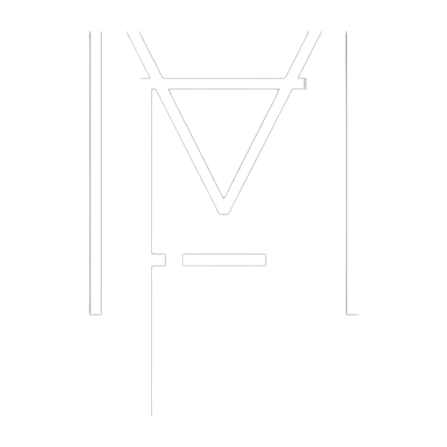
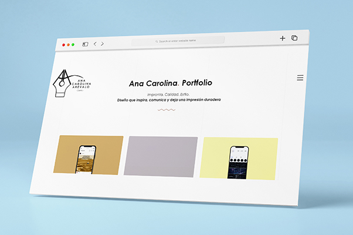
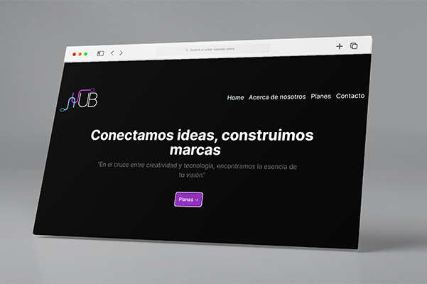
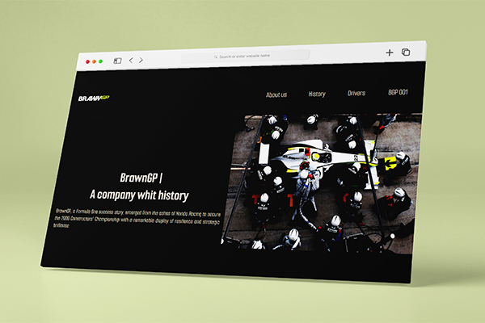
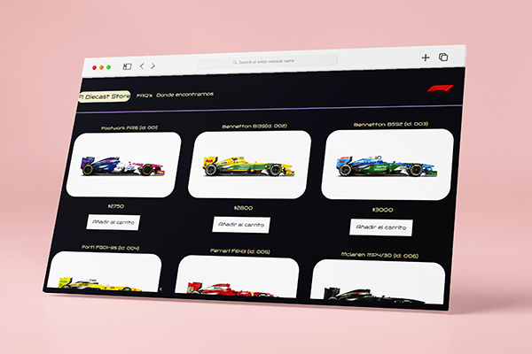
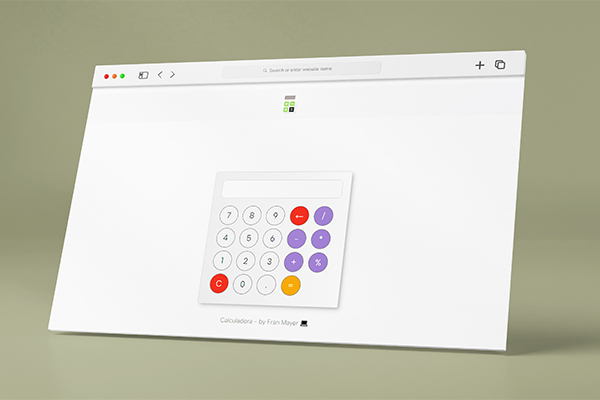
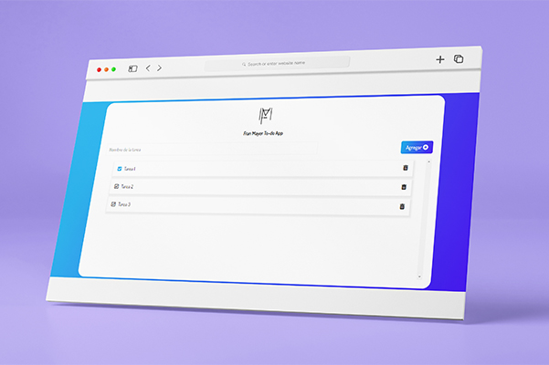
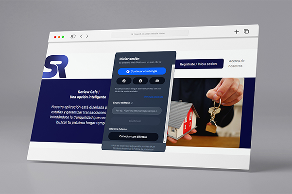
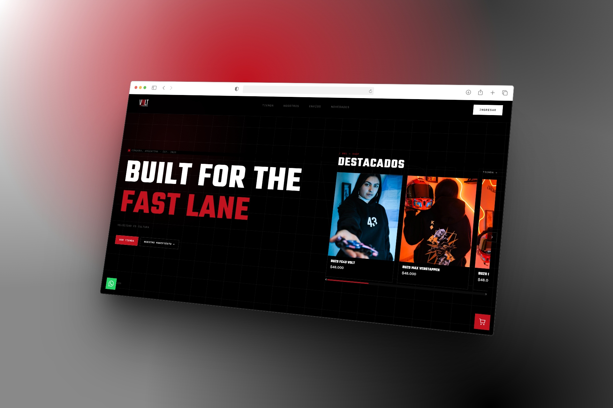

Hola! 👋
Soy Fran Mayer
Con más de 4 años de experiencia mejorando la experiencia de los usuarios: del soporte y QA al desarrollo web.
Conoceme!
Con más de 4 años de experiencia mejorando la experiencia de los usuarios: del soporte y QA al desarrollo web.
Conoceme!
¡Hola! Soy Fran Mayer, Técnico de Soporte y QA con más de 4 años de experiencia en atención multicanal, resolución de incidencias de hardware/software y gestión de tickets en entornos de alta demanda, en transición activa hacia QA Testing y desarrollo Front End.
Tengo historial comprobado con plataformas SaaS, impresoras térmicas en red y CRMs líderes como JIRA, HubSpot y Salesforce. Me destaco por la documentación y reproducción de bugs, la comunicación clara con usuarios de cualquier nivel técnico y la trazabilidad completa en el cierre de casos.
Cuento con formación certificada en testing manual y automatizado (Cypress) y en desarrollo web, además de experiencia en equipos como SCTR Group controlando la calidad de interfaces y documentando buenas prácticas de testing.
Me apasiona seguir creciendo en la intersección entre el testing y el front end. Fuera del trabajo, disfruto del fútbol, la naturaleza y el aprendizaje colaborativo dentro de la comunidad tech.
Si buscas a alguien detallista, con foco en la calidad y la experiencia de usuario, ¡me encantaría que conectemos!


Resolución de incidencias N1/N2 vía chat, teléfono y correo en un software de gestión gastronómica usado por cientos de locales, dentro de SLA. Diagnóstico y configuración de impresoras térmicas LAN/USB, documentación de bugs con pasos de reproducción y coordinación con desarrollo para su escalamiento, y trazabilidad completa de casos en el sistema de ticketing.
Asistencia técnica a estudiantes y docentes en acceso a plataforma, videoconferencias, entrega de tareas y configuración de dispositivos. Identificación, documentación y escalamiento de bugs con pasos de reproducción detallados, y gestión de la cola de tickets con registro completo de cada interacción.
Control de calidad de interfaces web, reportando inconsistencias bajo criterios de aceptación claros y verificables. Documentación de procesos y buenas prácticas de testing, facilitando el onboarding de nuevos integrantes al equipo.
Contacto proactivo con clientes en riesgo de baja mediante Avaya, negociando planes y beneficios personalizados para reducir la tasa de cancelación. Registro completo de interacciones, acuerdos y seguimientos en CRM, asegurando trazabilidad end-to-end del proceso de retención.








Desarrollo, creación y diseño de páginas webs, landing pages y E-commerce.
Puedo brindarte una mirada objetiva sobre la interfaz de tu sitio para que sea más efectivo y dinámico.
Desarrollo de interfaces que se adaptan perfectamente a cualquier dispositivo: móvil, tablet y desktop.
Mejora del rendimiento de tu sitio web: velocidad de carga, SEO técnico y experiencia de usuario optimizada.
Servicio de asistencia ante cualquier duda con respecto a tu sitio web nuevo o que ya dispongas.
Asistencia en los mejores hosts y compra de dominios para la web de tu emprendimiento.
Disponible para comenzar a trabajar juntos
(+54) 9 351-7883076
{kind=link}
{kind=link}
{kind=link}
{kind=link}
{kind=link}
{kind=link}
{kind=link}
{kind=link}